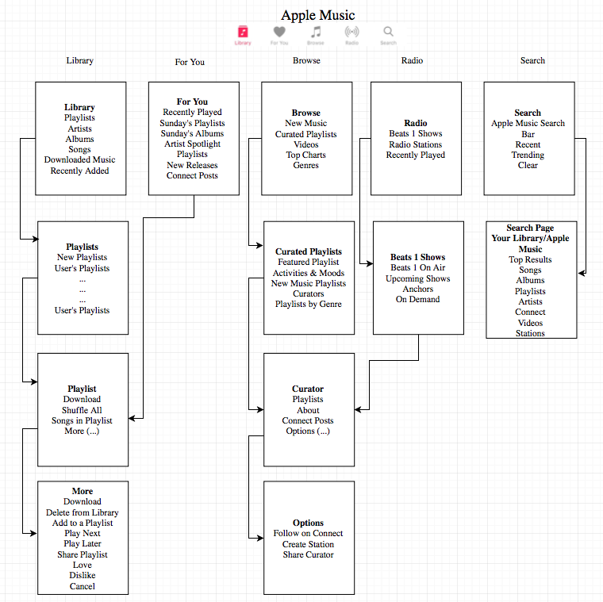

Vibes
A Music Streaming Concept for the Masses
Vibes is a music streaming app that focuses on reducing clutter and giving users
power over their music. By focusing on your music and playlist management, Vibes
lets you control the vibes for any scenario your in.
Vibes was designed with 2 others in the COGS Usability and Information
Architecture course. In the last few weeks of the course, my team interviewed
frequent music listeners, compared user experience flows between the currently
popular music streaming apps, analyzed their structures, and designed our own
wireframes. I mainly worked on creating these Wireframes on Sketch and on User
Research.
User Research
We interviewed our friends who were heavy music junkies to get an idea
of what they wanted in an ideal music streamign app. Most of them use multiple
services to find and collect their music. Our research group were all college
individuals and these were the questions we asked:
1. What is your favorite music app? Why?
2. What other apps do you use? If any, why?
3. When was the last time you made a playlist? Which app is easiest to make one?
4. What are some pet peeves about making a playlist?
5. Do you find it easy to discover new songs you like through the app?
6. When do you listen to playlists? Eg. gym, study, bus, all the time everywhere
7. Do you update old playlists? If so, how? (step by step)
8. Do your playlists have a theme? Do you categorize them based on what you're doing at the moment for example?
9. Where do you create your playlist?
We observed how they use these apps and what features they liked and often
used. We focused heavily on playlist management and the ease to manage these
playlists on the go. Surprisingly, the most popular app with students, Spotify
has terrible playlist management. Apple Music has a far better implementation,
but many college students prefer Spotify because it has strong social features.
Many users said they used Spotify way before Apple Music and do not want to
transfer all their playlists over.
Comparisons of Current Music Services
From here, we compared good user experience flows for managing playlists and
even looked at bad ones to get an idea of what we could do for our music
app. Here are some comparisons for adding music to playlists:
We also compared the navigation structures of these services so we can
get an idea of how to make our navigation:

Our Wireframes
Finally, we came up with our own wireframes. We first sketched it out by hand
and then I converted put it on Sketch. Here are some of them:
Figure 1. The home screen and the library screen
Figure 2. Creating a playlist and adding initial songs to the playlist
Figure 3. Adding a song from the initial screen and from "Songs"
Figure 4. Deleting a song and updating the playlist
Conclusion
To say I learned a lot of new things I have never been exposed to before
might be an understatement. I have never thought about working on design
before but never done it. Vibes has shown me the intricacies in coming up
with a simple design for the app. Users use the app based on the design
and the experience they get out of it. Studying current streaming services
and seeing what users' behavior taught me a lot about the importance of
user experience. As important as coding is, understanding how customers
behave and what they might like is extremely important. For that reason,
I think a course like this should be put a core CS class as it's fundamental
for software engineering.